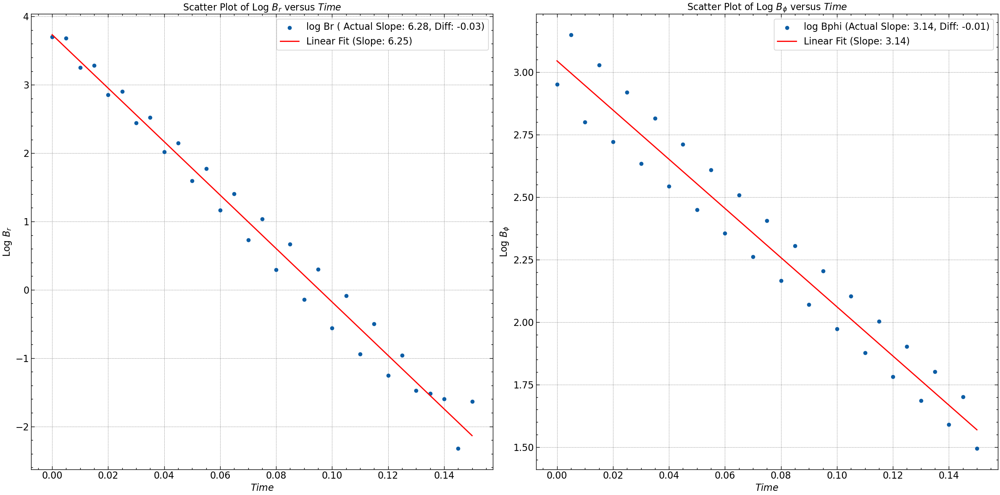

Mean Field Dynamos#
The mean-field dynamo equation describes the generation of a magnetic field in a turbulent conducting fluid. The general form of the mean-field dynamo equation, neglecting the alpha effect, velocity terms, and assuming the diffusion coefficient is scalar, along with the condition that the divergence of the magnetic field (\(\nabla \cdot \mathbf{B} = 0\)), is given by:
Where:
\(\bar{\mathbf{B}}\) is the magnetic field vector.
\(\bar{\mathbf{v}}\) is the velocity vector of the conducting fluid.
\(\eta\) is the magnetic diffusion coefficient.
\(\nabla \times (\bar{\mathbf{v}} \times \bar{\mathbf{B}})\) represents the stretching and folding of the magnetic field lines due to the fluid motion.
\(\eta \nabla^2 \bar{\mathbf{B}}\) represents the diffusion of the magnetic field.
Neglecting the alpha effect and the stretching term (\(\bar{\mathbf{v}} \times \bar{\mathbf{B}}\)) and considering a scalar diffusion coefficient with \(\nabla \cdot \mathbf{B} = 0\), the simplified mean-field dynamo equation becomes:
This equation describes the evolution of the magnetic field solely due to diffusion, without any contribution from fluid motion or turbulent effects.
For the radial component ( \(B_r\) ): $\( \frac{\partial \bar{B}_r}{\partial t} = \eta \left( \frac{1}{r} \frac{\partial}{\partial r} \left( r \frac{\partial \bar{B}_r}{\partial r} \right) - \frac{Br}{r^2}+ \frac{\partial^2 \bar{B}_r}{\partial z^2} \right) \)$
For the azimuthal component (\(B_{\phi}\)): $\( \frac{\partial \bar{B}_\phi}{\partial t} = \eta \left( \frac{1}{r} \frac{\partial}{\partial r} \left( r \frac{\partial \bar{B}_\phi}{\partial r} \right) - \frac{B_{\phi}}{r^2} + \frac{\partial^2 \bar{B}_\phi}{\partial z^2} \right) \)$
For the axial component (\( B_z \)): $\( \frac{\partial \bar{B}_z}{\partial t} = \eta \left( \frac{1}{r} \frac{\partial}{\partial r} \left( r \frac{\partial \bar{B}_z}{\partial r} \right) - \frac{B_z}{r^2} + \frac{\partial^2 \bar{B}_z}{\partial z^2} \right) \)$
These spiral galxies can be approximated as a spatially symmetric thin disc where \(\frac{\partial}{\partial \phi} = 0\). We also that observe \(B_z\) is much weaker than \(B_r\) and \(B_\phi\), we can neglect \(B_z\) in equations for \(B_r\) and \(B_\phi\). Alternatively, \(B_z\) can be determined from the solenoidality condition \(\nabla \cdot \mathbf{B} = 0\) as soon as \(B_r\) and \(B_{\phi}\) have been solved for.
Setting the up Simulation#
Before we begin#
This is essentially the step zero of the simulation to non dimensional the differential equation.Nondimensionalization allows us to focus on the relative importance of different terms in the equations and simplifies the interpretation of the results. It also helps in comparing simulations across different scales and systems. To nondimensionalize the given equations, we’ll scale each parameter by equivalent units to obtain a set of dimensionless quantities. This ensures that parameters of vastly different magnitudes can be treated uniformly, which is particularly useful for simulations. Let’s denote the scaling factors as ( \(R_o\) ) for radial distance, ( \(h\) ) for axial distance, and \(\frac{\eta}{h^2}\) for time. The dimensional variables are denoted by \((r, z, t)\), while the nondimensional variables are denoted by (\(\tilde{r}, \tilde{z}, \tilde{t}\)).
We’ll use the following scaling:
Radial distance: \(r \rightarrow \tilde{r} = \frac{r}{R_o}\)
Axial distance: \(z \rightarrow \tilde{z} = \frac{z}{h}\)
Time: \(t \rightarrow \tilde{t} = \frac{\eta t}{h^2}\)
galatic size ratio: \(\epsilon = \frac{h}{R_o}\)
note: for typical spiral galaxies the values of \(h\) and \(R_o\) are \(0.5 \ \text{Kpc}\) and \(10 \ \text{Kpc}\) respectively. And hence, \(\epsilon \ll 1\).
Applying these scalings to the equations:
For \(B_r\):
Becomes:
For \(B_\phi\):
Becomes:
We can similarly nondimensionalize the equation for \(B_z\).
Grounds for Simulation#
We’ll explore two different approximations for solving the system: one neglecting the radial derivatives entirely and solving only for the axial direction \(\hat{z}\), and the other approximating the derivative in \(\hat{z}\) while solving in \(\hat{r}\) direction.
Approximation 1: Neglecting Radial Derivatives#
In this approximation, we neglect all radial derivatives and solve the equations only for the axial direction \(\tilde{z}\). This simplifies the equations significantly and is applicable when variations in the radial direction are much smaller compared to the axial direction, such as in thin disk systems. In this approximation, we solve the equations in the radial direction \(\tilde{r}\) but approximate the axial derivative \(\frac{\partial}{\partial \tilde{z}}\). This is commonly done in situations where the system has a dominant axial symmetry, such as in spiral galaxies where the thin disk approximation is valid.
For \(B_r\):
For \(B_\phi\):
To solve the equations for \(B_r\) and \(B_\phi\) in the axial direction \(\tilde{z}\) under the thin disk approximation. We seek solutions of the form \(B(z,t) = B_0(z) \exp(-\gamma t)\) where \(B_0(z)\) represents the spatial variation of the magnetic field and \(\gamma\) is a decay constant.
Substituting this form into the differential equations, we obtain:
For \(B_r\):
For \(B_\phi\):
These are second-order ordinary differential equations (ODEs) with constant coefficients. The general solution for each equation can be written as a linear combination of sine and cosine functions due to the homogeneity and isotropy of the problem. Thus, the general form of \(B_r\) and \(B_\phi\) would be:
where \(A_r\), \(B_r\), \(A_\phi\), and \(B_\phi\) are constants to be determined based on initial or boundary conditions.
The parameter \(\gamma\) determines the decay rate of the magnetic field in time. Its value depends on the physical properties of the system and the boundary conditions.
Eigenmodes with Boundary Condtions#
Vacuum Boundary condtion:
For this boundary condition the analytical solution will be the following:
Neumann Boundary condtion:
For this boundary condition where at boundary the spatial derivative is \(0\), then the analytical solution will be the following:
Approximation 2: Approximating the Axial Derivative#
Now, for the second approximation, we approximate the axial derivative as \(\frac{\partial}{\partial \tilde{z}} \approx -\frac{\pi}{2h}\). This approximation assumes that the variation in \(\tilde{z}\) is much smaller compared to the azimuthal variation \(\phi\) within the thin disk, hence the derivative becomes effectively constant.
For \(B_r\):
For \(B_\phi\):
Results#
We have solved the diffusion equation z with the original eigenmodes as the initial condition. We have have generated \(Br_o\) and \(Br_\phi\) using three seeds and also have exerpimented with six different eigenmodes in between \(B_r\) and \(B_\phi\).
Neglecting Radial Derivatives (z approximation)#
Dirchilet Boundary Condition#
Seed = 10 with eigenmodes \(m=5\) and \(n=3\).
Seed = 25 with eigenmodes \(m=25\) and \(n=25\).
Seed = 100 with eigenmodes \(m=100\) and \(n=75\).
For detailed analysis of the results check the simulation file here.
Neumann Boundary Condition#
Seed = 10 with eigenmodes \(m=5\) and \(n=3\).

Seed = 25 with eigenmodes \(m=25\) and \(n=25\).
Seed = 100 with eigenmodes \(m=100\) and \(n=75\).
For detailed analysis of the results check the simulation file here.